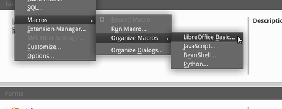
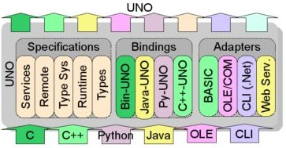
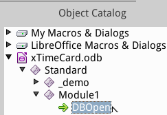
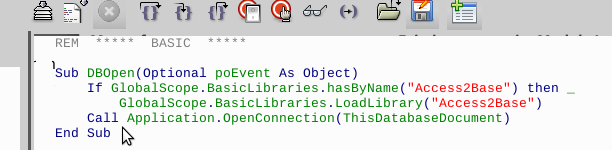
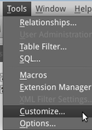
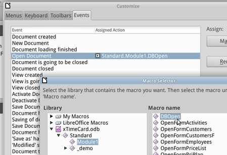

Code
Created sabato 21 febbraio 2015
Software for database like Microsoft Access allows developers to customize via macro oriented programming language based on Visual Basic for Open/LibreOffice we use BASIC and function from the API called UNO. This is difficult for beginners therefore in this tutorial we reuse the knowledge previously developed programming Microsoft Access.
BASIC
LibreOffice Basic belongs to the family of Basic languages. Many parts of LibreOffice Basic are identical to Microsoft Visual Basic for Applications and Microsoft Visual Basic. Anyone who has already worked with these languages can quickly become accustomed to LibreOffice Basic.
You can also benefit from the advantages of object-oriented programming since an interface in LibreOffice Basic enables you to use external object libraries. LibreOffice Basic is an interpreter language.

Integrated Development Environment
Like most of modern and advanced programming languages, also Open/LibreOffice BASIC has a full featured environment or IDE which provides an editor for creating and testing macros, the interpreter (to run macros) and the interfaces to various Open/LibreOffice applications (direct access to Office documents).
API and UNO
LibreOffice objects and methods, such as paragraphs, spreadsheets, and fonts, are accessible to LibreOffice Basic through the LibreOffice application programming interface, or API. Through the API, for example, documents can be created, opened, modified and printed.

The API can be used not only by LibreOffice Basic, but also by other programming languages, such as Java and C++. The interface between the API and various programming languages is provided by something called Universal Network Objects (UNO).
Since LibreOffice Basic is a procedural programming language, several linguistic constructs have had to be added to it which enable the use of UNO.
To use a Universal Network Object in LibreOffice Basic, you will need a variable declaration for the associated object. The declaration is made using the Dim instruction (see The Language of LibreOffice Basic). The Object type designation should be used to declare an object variable:
The object variable created must then be initialized so that it can be used. This can be done using the createUnoService function:
There is, however, one main difference: a Universal Network Object may support several services at the same time. Some UNO services in turn support other services so that, through one object, you are provided with a whole range of services. For example, that the aforementioned object, which is based on the
Access2Base
The extension Access2Base already available from LibreOffice 4.2, may be started by adding few lines of BASIC code in the opening of every database file. This gives the advanced users and developers the ability to use a simplified language in the style of Microsoft Access to perform complex task without bothering oneself with UNO interface.
Activate API
To be able to invoke the Access2Base API from your database file ".odb", you have to add few lines of code from the BASIC IDE into the a module of your database file.

DBOpen
Form menu Tools → Macros → Organize Macros → Open/LibreOffice Basic add the macro “DBOpen” to your main module, if you never created one is the right moment to add “Module1” to your database file.
Sub DBOpen(Optional poEvent As Object)
If GlobalScope.BasicLibraries.hasByName("Access2Base") then _
GlobalScope.BasicLibraries.LoadLibrary("Access2Base")
Call Application.OpenConnection(ThisDatabaseDocument)
End Sub
Create a module for your database application called for example “Module1” and edit to add the code; eventually you will end-up with a new macro called “DBOpen”.

Assign in the main Base window with menu items Tools → Customize... (Events tab) the above Sub ("DBOpen" in the example but use the name of your choice) to the OpenDocument event. Save in the ".odb" file itself.
 
Close and re-open your database file ".odb", this will trigger the OpenDocument event and start programming macro's with Access2Base dialect. Repeat for every new file to activate Access2Base API.
Test
Before creating cool things like a dashboard for our application or calculate values and update within the form, we need to check if the library works properly. For instance let's add the ability to launch a new form, copy “_test” into “....”.
Backlinks:
Home:Software:xTimeCard:Customize